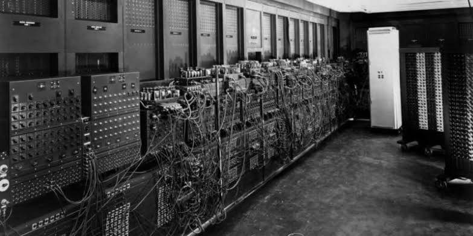
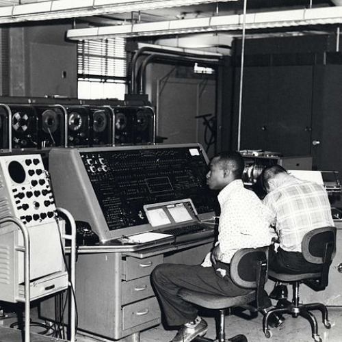
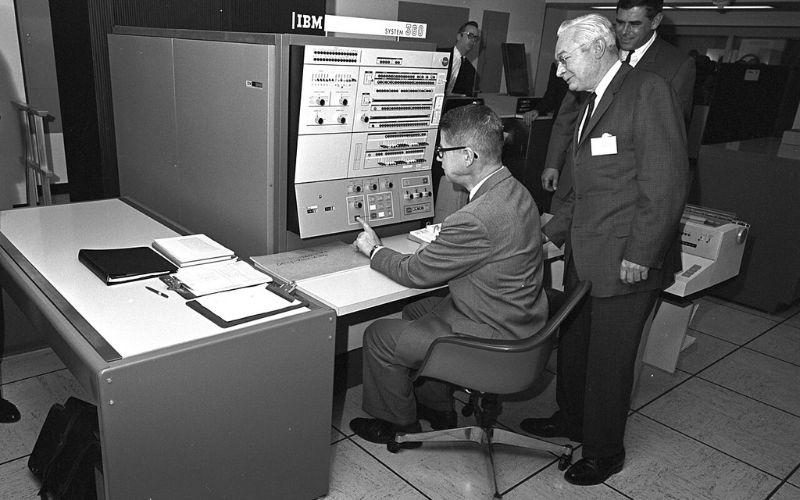
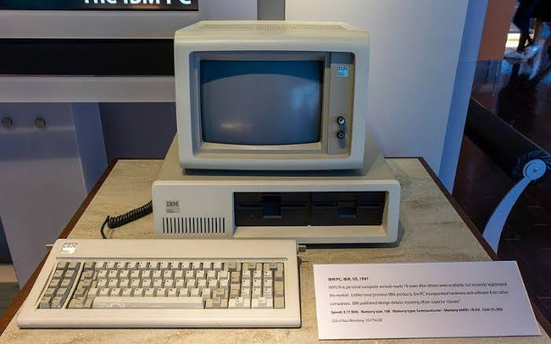
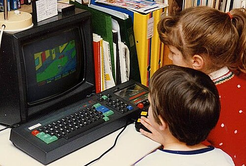

La evolución de las computadoras
Con el paso del tiempo, las computadoras fueron cambiando rápidamente. Se hicieron más pequeñas, rápidas, económicas y fáciles de utilizar. Estos avances permitieron que la informática llegara a millones de personas.
Primera generación

Las computadoras de primera generación utilizaban válvulas de vacío. Eran muy grandes, consumían mucha electricidad y producían bastante calor.
Segunda generación

En la segunda generación comenzaron a utilizarse transistores en lugar de válvulas de vacío. Esto permitió crear computadoras más pequeñas y eficientes.
Tercera generación

Durante la tercera generación se utilizaron circuitos integrados. Las computadoras aumentaron su velocidad y disminuyeron su tamaño.
Cuarta generación

La cuarta generación estuvo marcada por la aparición del microprocesador. Esto permitió fabricar computadoras mucho más pequeñas.
Computadoras personales

Las computadoras personales comenzaron a hacerse cada vez más comunes en hogares, escuelas y lugares de trabajo.
La llegada de Internet
Internet cambió la forma de utilizar las computadoras. Permitió conectar personas y compartir información desde diferentes lugares del mundo.